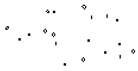

|
Was ist Game of Life?
Das Game of Life (Lebensspiel)
ist eine Computersimulation. Lebewesen verteilen sich auf einem
unbegrenzten Feld quadratischer Zellen. Je nach Nachbarschaft bleiben sie
am Leben, sterben oder bringen neues Leben hervor.
Im Beispiel geht man von
einer Population von 7 Lebewesen aus. Sie vermehren sich bis auf 12 und
sterben nach 6 Generationen aus.
Game of Life kann auch als zellulärer Automat angesehen werden, bei dem
der Zustand einer Zelle vom eigenen Zustand und von dem der Nachbarzellen
abhängt.
Das Spiel wurde 1970 vom englischen Mathematikprofessor John Conway
entwickelt.
Regeln top
Jede neue Generation wird nach einer
Überlebensregel (I), einer Sterberegel (II) und einer Geburtsregel (III)
ermittelt.
| ........ |
Eine Zelle a ist entweder von einem Lebewesen besetzt oder
nicht. Welchen Zustand sie in der nächsten Generation hat,
hängt von der Besetzung der acht Nachbarzellen
ab. |
1. Fall: Die Zelle a ist besetzt.
(I) Das Lebewesen in dieser
Zelle überlebt, wenn es 2 oder 3 Nachbarn hat.
(II) Das
Lebewesen stirbt, wenn es 0, 1, 4, 5, 6, 7 oder 8 Nachbarn hat.
(Bei keinem oder einem Nachbarn stirbt es aus Einsamkeit, bei 4 bis 8
wegen Überbevölkerung.)
2.Fall: Die Zelle a ist nicht besetzt.
(III) Gibt es zu
dieser Zelle genau 3 Lebewesen in den Nachbarzellen, so entsteht hier ein
neues Lebewesen. In allen anderen Konstellationen bleibt sie leer.
Anwendung auf das Beispiel
top
Auf diese Weise kann man zu
jeder Population schrittweise die nachfolgende Generation ermitteln. Es
genügen Bleistift, kariertes Papier und Radiergummi. Natürlich ist es
besser, die vielen stupiden Denkschritte einem Computer zu überlassen.
Computereinsatz top
| ...... |
In den siebziger und achtziger Jahren haben sich viele
Computernutzer mit diesem Spiel beschäftigt und ein Programm
geschrieben (links). Wegen der hohen Auflösung und vor allem wegen
der Schnelligkeit heutiger Computer hat das Lebensspiel eine
neue Qualität erhalten. | Will man das Spiel
des Lebens kennenlernen, sollte man sich z.B. aus dem Internet ein
Programm besorgen (siehe Linkliste) und damit experimentieren.
Stillleben top
| ... |
Im Anfangsbeispiel oben verschwand die ausgesetze Population
nach 6 Generationen.
Bei anderen Ausgangskonstellationen bleiben meist zum Schluss
stabile Populationen (und "Blinker")
zurück. |
Die stabilen Populationen enthalten nur Lebewesen mit 2 oder 3
Nachbarn und ändern sich nicht mehr. Sie heißen nach Conway Stillleben
(still lifes).
Hier ist eine Darstellung einiger bekannter
Stillleben.
Populationen mit wenigen
Lebewesen sind erforscht. Wer sie gefunden hatte, durfte ihnen einen Namen
geben.
Oszillatoren top
... ... ... |
Eine andere auffällige Population ist der Blinker. Er besteht
aus drei Lebewesen, die abwechselnd übereinander oder nebeneinander
liegen. | Er gehört zu den
Periode-2-Oszillatoren (periodic 2 oszillators, p2).
Hier ist eine Zusammenstellung bekannter p2-Populationen:
Die Perioden können auch größer als 2 sein:
Links ein Periode-3-Oszillator
(p3), das Kreuz (cross), rechts ein Periode-60-Oszillator in Aktion (p60).
Bewegung top
Gleiter
| ...... |
Es gibt merkwürdige Gebilde, die sich diagonal auf dem Feld
bewegen. Sie bringen ein interessantes Moment in die Abfolge der
Generationen. Die "Gleiter" bestehen in jeder Phase aus 5 Lebewesen
und haben die "Periode" 4. |
Gleiterquelle top
 |
Das ist schon höhere "Game of Life"-Wissenschaft: Im Bild links
steht eine unscheinbare Anordnung von Lebewesen. Verfolgt man die
nachfolgenden Generationen, so werden gleichmäßig Gleiter auf die
Reise geschickt. |
 | Nach jeweils 30
Generationen wiederholen sich die Bilder.
In (amerikanischem)
Englisch heißt diese Anordnung "glider gun".
Eater top
| ......einer |
Links steht ein "Fresser", der gleichzeitig ein Stillleben ist.
Trifft ein Gleiter an einer bestimmten Stelle und in einer
bestimmten Phase auf ihn, so geht der Eater ungeschoren aus dem
Zusammenprall hervor. Der Gleiter stirbt. |
... ... ... |
Spaceships top
| ...... |
Auch "Raumschiffe" bewegen sich. Es gibt sie in drei Größen: Sie
heißen lightweight spaceship, middleweight spaceship und heavyweight
spaceship, abgekürzt LWWS, MWSS und HWWS.
Die Populationen erinnern sowohl im statischen Zustand als auch
in der Bewegung mehr an Vögel als an Raumschiffe. |
... ... ... |
Dreier-Crash top
... ... ... |
Drei Gleiter bewegen sich aufeinander zu, stoßen zusammen und
dann? |
Populationen mit
einer Geschichte top
Eine beliebte Beschäftigung ist die Entdeckung von Populationen mit
interessanten Verläufen. Populationen mit wenigen Lebewesen sind erforscht
und katalogisiert.
... ... ... |
Eine bekannte Population dieser Art hat die Form eines
F-Pentominos. Sie hat eine bewegte Entwicklung:
Stillleben und Blinker entstehen, werden wieder aufgesogen und
bilden sich erneut. Insgesamt 6 Gleiter entfernen sich auf
Nimmerwiedersehn. Am Ende bleibt nach 1102 Generationen eine
Population mit 15 Stillleben und 4 Blinkern zurück. |
|
Die folgenden Beispiele haben interessante und zum Teil lange
Geschichten. Darauf weisen die Namen hin.
Es ist faszinierend, welche Populationen aus Hunderten von Lebewesen
man sich schon ausgedacht hat. Aus Grundfiguren werden komplizierte
Arrangements zusammengestellt. Es kommt zu vielfältigen und skurrilen
Bewegungsabläufen.
Selbstgemachte
Populationen top
"Es gibt nichts Gutes, außer man tut es." Es
genügt, auf der Eingabeoberfläche zu kritzeln. Daraus entwickeln sich
unvorhersagbare Populationen.
| ...... |
Gibt man eine symmetrische Figur vor, so bleibt die Symmetrie in
allen nachfolgenden Generationen erhalten. Dadurch ist sie zu jeder
Phase ansehnlich. Manchmal hat man Glück: Wenn man zu Beginn eine
Population in Form eines Fensters (links) aussetzt, verlassen vier
Gleiter die Mitte. Rechts der Moment der Geburt der vier Gleiter! |
...... |
Game of Life im Internet
top
(eine zufällige Auswahl, alphabetisch geordnet)
In Deutsch:
Andreas
Ehrencrona
- Game of Life - Online
Axel
Rasmus
- Applet für das Game of
Life
Heise
online
- Aufsatz: Das Lebensspiel
und andere Gitterautomaten
Joachim
Frey
- Spielregeln, Aufgaben,
Links
Ronald
Poppe
- Aufsatz: Und daraus
entsteht Leben!
In Englisch:
Alan Hensel
- Applet mit vielen
Populationen
- Sammlung von
Programmen, fast 200 Populationen unter lifep.zip für life32
HKoenig
- LifeInfo, umfangreiche Homepage über Conway's
Game of Life
Johan G. Bontes
- umfangreiches und leistungsfähiges
Programm life32, Herunterladen möglich
John
Saeger
- einfaches und
übersichtliches Programm für Einsteiger, Herunterladen möglich
Mark D.
Niemiec
- viele Informationen über Conway's Game of Life
Paul
Callahan
- umfangreiche Homepage
über Conway's Game of Life
-
ein einführender Aufsatz unter Wonders of
Maths
Kommentar top
Ich bin nach 20 Jahren wieder auf "Game of Life"
gestoßen. Es ist erstaunlich, welche Entwicklung diese Spielerei (mit
einem wissenschaftlichem Ursprung) bis zu den heutigen schnellen Computern
genommen hat. Auch gibt das Internet jetzt Informationen preis, die mir
früher nicht zugänglich waren. Ich habe das Gefühl, eine Tür aufgemacht
und nur hineingeschaut zu haben.
feedback
Diese
Webseite ist bald in Englisch vorhanden.
URL meiner
Homepage:
http://www.mathematische-basteleien.de/index.htm
früher:
http://mitglied.lycos.de/jkoeller/
©
Jürgen Köller top |